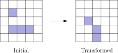
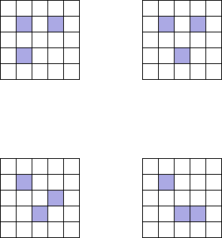

把中心格分「初始填充 / 初始为空」两类：前者要求中心有 $2$ 或 $3$ 个填充邻居且这些邻居必须全部消失，只有 $2$ 种（一对对角角格）；后者要求中心恰有 $3$ 个填充邻居，按旋转/镜像轨道得 $4+4+4+8=20$ 种。合计 $22$，答案 (C)。
Each square in a $5\times5$ grid is either filled or empty, and has up to eight adjacent neighboring squares, where neighboring squares share either a side or a corner. The grid is transformed by the following rules: any filled square with two or three filled neighbors remains filled; any empty square with exactly three filled neighbors becomes a filled square; all other squares remain empty or become empty. Suppose the $5\times5$ grid has a border of empty squares surrounding a $3\times3$ subgrid. How many initial configurations will lead to a transformed grid consisting of a single filled square in the center after a single transformation? (Rotations and reflections of the same configuration are considered different.) (A) $14$ (B) $18$ (C) $22$ (D) $26$ (E) $30$
中文翻译：$5\times5$ 网格中每格为「填充」或「空」，每格最多有 $8$ 个相邻格（共边或共角都算相邻）。一次变换规则：填充格若有 $2$ 或 $3$ 个填充邻居则保持填充；空格若恰有 $3$ 个填充邻居则变为填充；其余格保持为空或变为空。设 $5\times5$ 网格外围一圈是空格，中间是 $3\times3$ 子网格。有多少种初始状态能在一次变换后得到「只有正中心一格填充」？（互为旋转或镜像的状态算不同。） (A) $14$ (B) $18$ (C) $22$ (D) $26$ (E) $30$
📌 官方答案（LIVE by Po-Shen Loh）：
https://live.poshenloh.com/past-contests/amc10/2022B/problem/19
官方给出的正确选项为 (C) $22$，本站解析与之一致。
| 常见错误 | 错在哪 |
|---|---|
答 (B) 18 或 (D) 26 | 只数了「中心初始为空」的一大类，忘了「中心初始已填充、靠 $2$ 或 $3$ 个邻居存活」这一小类（$2$ 种），或者把它的数量估错。题目问的是「变换后只有中心一格」，中心初始是填充还是空，都要考虑。 |
答 (A) 14 | 把「每个初始填充的非中心格都必须消失」误当成「它们两两不相邻」。实际上相邻也可以消失——只要该格的填充邻居数是 $0$ 或 $1$（规则中存活要求 $2$ 或 $3$）。过度收紧条件会砍掉 $8$ 个合法状态。 |
答 (E) 30 | 忘了检查边框空格会不会「诞生」新格。外围一圈虽初始为空，但若某个边框格恰有 $3$ 个填充邻居，它也会变成填充，变换后就不止中心一格了。合法状态必须同时满足「内部只有中心存活」和「边框全部保持为空」。 |
根本问题：没有把「变换后只有中心一格」拆成逐格的充要条件，再按中心状态分类。标准动作：① 中心若初始填充 → 需恰 $2$ 或 $3$ 个填充邻居；② 中心若初始为空 → 需恰 $3$ 个填充邻居；③ 其余 $24$ 格（含边框）都必须变换后为空；④ 用 $2^9=512$ 个初态的穷举或对称性分类把计数做实。
与官方解法同源：本站方案一与官网 2022AMC10B(19) 的书面解答一致——按中心初始是否填充分两类：中心填充时只有「两个对角角格 + 中心」这 $2$ 种；中心为空时恰 $3$ 个邻居填充，得到四类代表图案，其中三类各有 $4$ 个旋转、一类有 $4$ 个旋转加 $4$ 个镜像共 $8$ 个，合计 $4+4+4+8=20$；总数 $2+20=22$。
本站的增量是把规则写成可执行的逐格判定并对全部 $512$ 个初态做程序模拟，同时用旋转/镜像轨道把 $20$ 这一类的来源逐项核对。
把 $3\times3$ 子网格的 $9$ 格记为变量，外围一圈恒为空。一次变换后要求只有中心格填充。
情形 1 · 中心初始填充。 它要存活，必须有恰好 $2$ 或 $3$ 个填充邻居（中心有 $8$ 个邻居，都在子网格内）。每个填充的邻居又必须消失，即它自己不能有 $2$ 或 $3$ 个填充邻居；同时不能有任何空格（含边框格）恰好凑到 $3$ 个填充邻居而诞生新格。逐对检查「互不相邻」的位置组合，唯一可行的是一对对角角格：
..# #.. .#. .#. #.. ..#
共 $2$ 种（两种对角方向）。此时中心有 $2$ 个填充邻居得以存活，两个角格各有 $1$ 个填充邻居（中心）而消失，边框格最多看到 $2$ 个填充格、不会诞生。
情形 2 · 中心初始为空。 它要变成填充，必须恰有 $3$ 个填充邻居。这 $3$ 格又都得消失，且不能让别的空格（包括边框）凑到 $3$ 个填充邻居。满足条件的代表图案如下图（取自官方解答配图），按旋转/镜像展开：

前三类图案各自只有 $4$ 个旋转像，最后一类旋转与镜像不同、共 $4+4=8$ 个，故
$$4+4+4+8=20.$$合计 $2+20=22$。
答案：(C) $22$。
规则写成逐格判定：对 $5\times5$ 的每格数出 $8$ 邻域内的填充数 $n$，若该格填充则新状态 $=1$ 当且仅当 $n\in\{2,3\}$；若为空则新状态 $=1$ 当且仅当 $n=3$。枚举 $3\times3$ 子网格的 $2^9=512$ 种初始填充方式（边框恒为空），检查新网格是否恰为「只有中心一格」：
与方法一的 $2+20$ 完全对齐。
验证技巧：① 独立枚举 $512$ 个初态逐格模拟，答案 $22$；② 检查情形 1 的两种图案确实让中心有 $2$ 邻居、边框无诞生；③ 用轨道大小 $2+4+4+4+8=22$ 对账；④ 特别验证「旋转/镜像算不同」——若把互为对称的图案合并，答案会变成 $5$ 而不是 $22$。
核心知识点：把「变换后的形状」翻译成每一格的局部条件，再按中心状态分类。这是过程模拟（process simulation）题的标准拆解。
必须掌握的要点：
把「中心初始填充」的全部合法初态一个不漏画成 $3\times3$ 图（用 # 表示填充、. 表示空），并逐格说明为什么它们变换后只剩中心。
..# / .#. / #.. 与 #.. / .#. / ..#两种图案都是「中心 + 一对对角角格」。中心有 $2$ 个填充邻居，满足 $n\in\{2,3\}$ 故存活；两个角格各自只有中心这 $1$ 个填充邻居（对角两角互不相邻），$n=1$ 故消失；其余空格的填充邻居数最多为 $2$（例如边框格最多看到两个角格），达不到诞生门槛 $3$，故全部保持为空。变换结果恰为只有中心一格。
要点：逐格给出邻居数才是完整的列举证明；只画图不解释规则，等于没验证。
在全部 $22$ 个合法初态中，中心初始填充的有几个？初始为空的有几个？其中「初始填充格总数恰为 $3$」的有几个？
官方分类给出 $2$ 与 $20$。程序枚举 $512$ 个初态并对每个合法初态统计填充格数，结果全部为 $3$：情形 1 是「中心 + $2$ 个角格」，情形 2 是「$3$ 个中心邻居」。因此「恰 $3$ 个填充格」的有 $22$ 个。
要点：「全部合法初态都有 3 格填充」是本题隐藏的结构定理：中心填充需 $2$ 个邻居、中心为空需 $3$ 个邻居，两条路都导向总数 $3$。
把规则中「空格恰有 $3$ 个填充邻居才诞生」改成「恰有 $2$ 个」，存活规则不变，仍要求一次变换后只有中心一格。问合法初态有几个？
中心初始为空时，要让它诞生必须恰有 $2$ 个填充邻居；这两个填充格又必须消失，且不能让边框格也凑到 $2$ 个填充邻居。唯一可行的是一对对角角格（..# / ... / #.. 与 #.. / ... / ..#）：两角互不相邻，各有 $0$ 个填充邻居故消失；边框格最多只看到 $1$ 个角格，不会诞生；中心恰有 $2$ 个填充邻居，按新规则诞生。中心初始填充的情形则会被「边框格也凑到 $2$」淘汰。对全部 $512$ 个初态按新规则重新模拟，命中数恰为 $2$。
要点：规则参数一改，答案从 $22$ 塌到 $2$；诞生门槛降低会让「边框也诞生」的约束急剧收紧。这类题务必按新规则重新全枚举，不能靠调整旧答案。
证明「若某初态合法，则它的任意旋转或镜像也合法」；据此把 $22$ 个合法初态按正方形的旋转/镜像群分成轨道，写出每个轨道的大小并验证总和为 $22$。
邻域（共边或共角共 $8$ 格）在正方形的旋转与镜像下保持不变，变换规则只依赖邻居个数，目标「只有中心一格」在变换下也不变，故合法性与对称性可交换。情形 1 的两种对角角格图案互为一个 $90°$ 旋转，构成大小 $2$ 的轨道。情形 2 的四类代表图案中，三类有 $4$ 个旋转像（镜像与某个旋转重合），一类旋转与镜像不同、给 $4+4=8$ 个。轨道大小 $2+4+4+4+8=22$ ✓，与分类计数一致。
要点：对称性是计数的乘数不是除数（题目说旋转/镜像算不同）；用轨道大小反查「有没有漏数」比逐个数更可靠。
证明任一合法初态中，每个初始填充的非中心格至多只有 $1$ 个填充邻居（因而必然消失），而中心若初始填充则恰有 $2$ 个填充邻居；由此求所有合法初态中初始填充格数的最小值与最大值。
先定总数。中心初始为空时要诞生，必须恰有 $3$ 个填充邻居，故总数恰为 $3$。中心初始填充时要存活，填充邻居数为 $2$ 或 $3$；若为 $3$，这三个邻居在 $8$ 邻域中必然出现相邻的一对，从而某个空格会同时看到三个填充格而诞生新格，与目标矛盾（官方分类也只剩「一对对角角格」），故只能是 $2$，总数 $=1+2=3$。再定邻居数：既然总共只有 $3$ 个填充格，任一非中心填充格最多看到另外 $2$ 个填充格；又它必须消失（否则变换后不止中心一格），邻居数不能在 $\{2,3\}$，故只能是 $0$ 或 $1$。程序统计印证：全部 $22$ 个合法初态中，非中心填充格的邻居数为 $0$ 者 $36$ 次、$1$ 者 $28$ 次，无一达到 $2$；中心填充的两种图案里中心恰有 $2$ 个邻居。于是初始填充格数的最小值与最大值都是 $3$。
要点：「极值相等」本身就是结构定理；先用「必须消失」把邻居数压到 $\le1$，再用「中心要存活/诞生」定出总数，比穷举更有说服力。
口诀：「先看中心填不填，邻居二或三；其余全要灭，边框别忘验；对称是乘数，轨道来对账」。